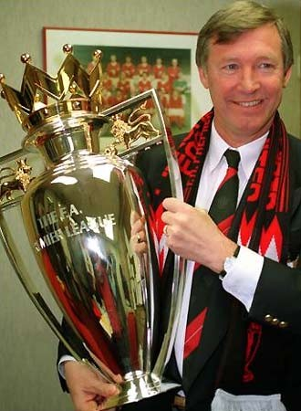

Chương 23

ó câu chuyện châm biếm như thế này: Năm 1990, khi lãnh tụ Nelson Mandela được trả tự do sau gần ba thập kỷ bị cầm tù, câu đầu tiên ông hỏi là: “Manchester United đã giành chức VĐQG chưa?” Tính đến năm 1991, cơn khô hạn danh hiệu của United đã kéo dài 24 năm, cơn khô hạn mà Alex Ferguson quyết tâm giải tỏa trong mùa bóng mới.
1991 đánh dấu nhiều biến chuyển ở Old Trafford. Trên thượng tầng, ban lãnh đạo tiến hành niêm yết cổ phiếu CLB trên thị trường chứng khoán, thành lập Công Ty Đại Chúng Manchester United (gọi tắt là United PLC). Giữ chức giám đốc điều hành công ty là chủ tịch Martins Edwards. Để khẳng định niềm tin vào HLV trưởng, Edwards mời Alex ký tiếp hợp đồng bốn năm, với mức lương 200 000 bảng một năm.
Đến lượt mình, Alex bổ nhiệm Brian Kidd vào vai trò trợ lý, thay thế cho Archie Knox. Từ ngày có Kidd, quan hệ giữa HLV trưởng United và trọng tài trở nên tốt hơn. Mỗi khi Alex làm căng với “vua sân cỏ”, Kidd sẽ xông vào can ngăn. Không ít lần, Alex mặt hầm hầm, xông tới trọng tài định “sấy”, nhưng bị Kidd ôm lấy, kéo đi chỗ khác. Nếu là Archie Knox thì đừng hòng có chuyện ấy. Knox không nhảy vào “sấy” ké đã là may.
Trên thị trường chuyển nhượng, Alex ký được một trong những bản hợp đồng hời nhất thế kỷ: Mua Peter Schmeichel, người khổng lồ Đan Mạch, từ Brondby với giá chỉ 500 000 bảng. Một trong những nguyên do khiến Manchester United chưa thể VĐQG là không có được thủ môn nào đáng tin cậy. Vấn đề đó nay được giải quyết triệt để. Theo thời gian, ai cũng sẽ công nhận Schmeichel là thủ thành xuất sắc nhất mọi thời đại của United. Nhiều người còn đi xa hơn, đánh giá anh là số một trong lịch sử túc cầu, trên cả Lev Yashin, Dino Zoff, hay Gordon Banks. Có thể nói: Schmeichel hoàn toàn không có điểm yếu. Anh không những phản xạ tuyệt vời, ra vào hợp lý, mà còn nổi tiếng là ông vua của những tình huống một đối một, và phân phối bóng cực tốt. Chẳng phải ngẫu nhiên mà trong giai đoạn 1991-1999, United là đội bóng chuyền về cho thủ môn nhiều nhất. Thân hình to lớn, lực lưỡng, giọng nói sang sảng như chuông, Schmeichel làm chủ hàng phòng ngự CLB. Dưới sự chỉ huy của Schmeichel, cặp trung vệ Bruce-Pallister vốn đã giỏi, nay lại càng hiệu quả hơn. Nhận xét về Schmeichel, Alex Ferguson nói một câu bất hủ: “Khi anh ta cất tiếng, thành trì đều rung chuyển!”
Ở tuyến tiền vệ, United có cặp “cánh” mới. Chuyển đến từ Shakhtar Donetsk (Ukraine), Andrei Kanchelskis chiếm ngay được vị trí chính thức bên cánh phải. Do Lee Sharpe phải nghỉ chấn thương dài hạn, Ryan Giggs được tín nhiệm trấn giữ cánh trái. Cùng sở hữu kỹ thuật cá nhân điêu luyện và tốc độ nhanh như gió lốc, cả hai cùng “song kiếm hợp bích”, làm nên bộ đôi tiền vệ cánh xuất sắc nhất giải VĐQG Anh những năm đầu thập niên 1990.
Mới 18 tuổi đã có chỗ đứng trong đội hình United, Ryan Giggs trở thành tâm điểm thu hút mọi sự chú ý. Nổi tiếng quá sớm không phải điều tốt, Alex hiểu rõ điều ấy. Sợ Giggs mắc bệnh ngôi sao, dẫn đến tiêu tan sự nghiệp, ông tìm mọi cách bảo vệ học trò. Alex không cho giới truyền thông tiếp cận Giggs, đồng thời cấm Giggs ký hợp đồng quảng cáo với các doanh nghiệp. “Tôi không muốn lại có thêm một George Best hay một Gazza”, ông nói, “Vì vậy tôi đóng cửa Old Trafford, nhốt Giggs bên trong. Như thế cậu ấy sẽ được an toàn”.[1]
Tuy vậy, đóng cửa Old Trafford chưa chắc đã an toàn. Một đêm nọ, Alex đang dự tiệc, bỗng nghe tin động trời: Lee Sharpe rủ Giggs đến nhà chơi; hai anh chàng đang quậy phá náo động cả khu phố. Ông thầy giận tím mặt: Sắp bước vào trận đấu quan trọng với West Ham, không lo dưỡng sức mà còn ăn với chơi. Ông lập tức bỏ bữa, lái xe đến tận nhà Sharpe. Đến trước nhà, Alex càng điên tiết khi thấy xe hơi đậu xếp thành hàng, bên trong thì toàn những tiếng nhạc xập xình và tiếng đàn bà. Ông đạp cửa xông vô, đuổi hết bọn con gái ra ngoài, rồi lôi đầu Sharpe, Giggs, và mấy cầu thủ trẻ khác ra “sấy”.
Giggs bị phạt trừ một tháng lương, nhưng Alex giận nhất là Sharpe, vì Sharpe lớn tuổi hơn, đã không biết làm gương, lại lôi kéo đàn em chơi bời. Ông bắt Sharpe chia tay bạn gái, rồi bán nhà, trở về sống trong ký túc xá của CLB. Bên cạnh những biện pháp mạnh, ông cũng khuyên nhủ học trò thân tình “Sharpe ơi, trong bóng đá, nếu muốn tiến bộ, con phải biết hy sinh. Tốc độ là điểm mạnh nhất của con. Cứ bê tha thế này, con sẽ mất đi tốc độ. Mà mất tốc độ là con mất tất cả đấy.”
Sau đêm đó, Giggs và Sharpe mỗi người đi một con đường. Giggs tu tỉnh, không bao giờ để thầy phải nhắc nhở thêm lần nữa. Cho đến ngày nay, ở tuổi gần 40, anh vẫn tỏa sáng tại giải ngoại hạng Anh. Sharpe thì vẫn giữ lối sống buông thả. Từ chỗ là cầu thủ trẻ số một quốc gia, anh rơi vào bóng tối của sự lãng quên.
Về phần Alex, xử xong Giggs và Sharpe, ông bắt máy gọi cho con trai Darren. “Ông già gọi để kiểm tra tôi”, Darren kể lại, “Ổng muốn biết chắc chắn tôi không trốn trong tủ áo nhà Sharpe!”
Lại nói chuyện giải VĐQG: Quỷ Đỏ khởi đầu mùa 1991-1992 một cách không thể tốt hơn. Trong 10 trận đầu tiên, họ thắng đến tám. Đến mùa Giáng Sinh, họ vững vàng ở ngôi nhất bảng, thẳng tiến trên đường đến cúp vô địch. Trước đó, United đã hạ Red Star Belgrade 1-0 (McClair lập công) để giành Siêu Cúp Châu Âu.
Bước ngoặt của mùa giải diễn ra vào khoảng cuối tháng 12, đầu tháng một, khi chỉ trong vòng 18 ngày, United phải ba lần gặp Leeds, trong khuôn khổ ba giải đấu: VĐQG, Cúp QG, và Cúp LĐ. Kết quả hết sức khả quan: Đội hòa trận đầu, thắng hai trận sau, đá văng Leeds khỏi hai Cúp. Nhưng nào ai ngờ chuyện “Tái ông thất mã”: nhờ bị loại khỏi các cúp, Leeds có cơ hội tập trung toàn lực vào giải VĐQG, còn United thì ngày càng mỏi mệt do phải căng sức thi đấu trên bốn mặt trận.
Thời điểm mùa giải chỉ còn sáu vòng, United vẫn ngự trị trên đỉnh bảng. Song đó cũng là lúc họ bước vào cơn ác mộng: Phải thi đấu bốn trận chỉ trong vòng bảy ngày. Trận đầu tiên, đội thắng Southampton 1-0, với cái giá phải trả là chấn thương của Paul Ince. Sang trận thứ hai, những đôi chân bắt đầu mệt mỏi chỉ kiếm nổi trận hòa với Luton. Danh sách chấn thương tiếp tục kéo dài: với ba nạn nhân mới: Paul Parker, Lee Martin và Danny Wallace (cộng thêm Bryan Robson và Mark Robins phải nghỉ dài hạn). Bước vào hai trận tiếp theo, các cầu thủ gần như kiệt sức, lần lượt tung cờ trắng trước Nottinham Forest và West Ham. Ở vòng áp chót, trong khi United thua trận thứ ba liên tiếp, Leeds dễ dàng hạ Sheffield United, đăng quang ngôi vô địch.
Nói đến những đại kình địch của Manchester United, nhiều người chỉ biết Liverpool và Manchester City. Thật ra,phải kể thêm Leeds. Những trận đối đầu giữa United và Leeds được gọi là “derby hoa hồng”.Không gì cay đắng hơn khi dẫn đầu gần suốt mùa giải, để rồi đánh mất vinh quang trong những vòng cuối cùng. Bị mất cúp vào tay Leeds thì càng cay hơn nữa.[2]
Y chang mùa trước, tuy không vô địch, United thâu tóm các danh hiệu cá nhân. PFA trao giải Cầu Thủ Xuất Sắc Nhất Nước Anh cho trung vệ Gary Pallister, và giải Cầu Thủ Trẻ Xuất Sắc cho Ryan Giggs. CLB cũng giành được Cúp LĐ đầu tiên trong lịch sử, sau chiến thắng 1-0 trước Nottingham Forest. Như trong trận tranh Siêu Cúp Châu Âu, Brian McClair là người ghi bàn duy nhất.
Một chiến tích nữa cho United trong mùa 1991-1992 là Cúp FA trẻ. Cúp năm đó đánh dấu sự ra ràng của một lứa cầu thủ đầy tài năng. Trong danh sách U-18 United dự trận chung kết với Crystal Palace có Ryan Giggs[3], Gary Neville, David Beckham, Nicky Butt, Keith Gillespie và Robbie Savage. Bốn người đầu sẽ hợp cùng Paul Scholes và Phil Neville tạo nên thế hệ vàng Alex Ferguson, sánh ngang cùng “Đồng Ấu Busby”; hai người sau phải sớm ra đi, nhưng cũng trở thành ngôi sao tại Newcastle United và Leicester City. Chứng kiến các cầu thủ trẻ United tung hoành, HLV Luton Town, David Pleat, cảm thán: “Ôi bọn trẻ này! Chúng sẽ thống trị bóng đá Anh trong mười năm tới đây!”
Mark Hughes là một thất vọng của mùa bóng. Chẳng phải tình cờ mà anh để rơi danh hiệu Cầu Thủ Xuất Sắc vào tay Gary Pallister. Vấn đề của Hughes là tâm lý. Bình thường, anh chơi rất tốt, nhưng chỉ cần vài trận không ghi được bàn thắng là sẽ mất tinh thần, và một khi đã mất tinh thần thì lại càng tịt ngòi. Nửa đầu mùa, Hughes liên tục nổ súng; United ghi được đến 45 bàn. Nửa sau, đội chỉ kiếm thêm được 21 bàn, còn Hughes trải qua 15 trận liền không biết mùi lập công. Do vậy, không có gì ngạc nhiên khi Alex Ferguson quyết định bổ sung tiền đạo cho mùa 1992-1993[4].
Ban đầu, Alex nhắm Alan Shearer, song Shearer lại ký hợp đồng với Blackburn, khiến ông phải chuyển sang mua Dion Dublin từ Cambridge. Dublin vừa chơi được mấy trận đã chấn thương phải nghỉ nửa năm. Thế là hàng tiền đạo “mèo lại hoàn mèo”. Đến tháng 11, United chơi 16 trận, chỉ ghi nổi 17 bàn: một thành tích vô cùng nghèo nàn.
Một chiều thứ tư, Alex Ferguson và Martin Edwards đang ngồi buồn bã trong văn phòng, không biết tính cách nào để cải thiện chất lượng hàng công, thì chuông điện thoại reo vang. Đầu dây bên kia là Bill Fotherby, giám đốc điều hành của Leeds. Fotherby hỏi Edwards liệu United có chịu bán Denis Irwin không. Câu trả lời dĩ nhiên là không. Sau vụ buôn bán bất thành, hai vị lãnh đạo tiếp tục ngồi “tám” những chuyện linh tinh.
Một ý tưởng chợt hiện ra trong đầu Alex, ông ghi vội vào giấy “Hỏi mua Cantona”, rồi chuyển cho Edwards. Nghe Edwards hỏi, Fotherby ngần ngừ một lúc, đoạn cho hay ông sẽ nói chuyện với HLV trưởng Howard Wilkinson, sau đó sẽ gọi lại thông báo kết quả.
Một giờ sau, khi Alex đang lái xe về nhà, ông nhận được điện thoại từ Edwards.
“Phi vụ Cantona đã xong”, giọng ngài chủ tịch hể hả, “Anh đoán thử giá xem.”
“Một triệu sáu”.
“Sai”.
“Hai triệu”.
“Sai”.
“Triệu rưỡi.”
“Sai”
“???”
“Một triệu chẵn!”
“Một triệu á?”, Alex gần bổ ngửa, “Rẻ vậy à? Thật không tin được!”
Nhưng đó là sự thật. Chỉ với một triệu bảng, Manchested United đã có được Eric Cantona. Ngày sáu tháng 12, 1992, Cantona ra mắt trong trận gặp Manchester City. Ngày 19 tháng 12, anh ghi bàn đầu tiên trong màu áo Quỷ Đỏ. Từ đó trở đi, từ chỗ đang tịt ngòi, United bỗng ghi bàn như xả lũ. Đội lần lượt hòa Sheffield Wednesday 3-3, đè bẹp Coventry 5-0, hạ Tottenham 4-1, rồi thắng QPR 3-1. Sau trận thắng Coventry, họ vươn lên chiếm giữ ngôi đầu bảng.
Cantona không phải dạng trung phong săn bàn, mà sở trường của anh là tạo cơ hội cho đồng đội lập công. Trên hàng tiền đạo United, cầu thủ người Pháp chơi lùi hơn so với Mark Hughes, hoạt động trong vai trò nhạc trưởng điều tiết thế trận. Có thể ví Cantona như một định tinh, còn các cầu thủ khác như vệ tinh chuyển động chung quanh, chờ những đường chuyền sát thủ của anh để băng lên ghi bàn. Với khả năng cầm bóng thượng thừa, Cantona sẽ hút đối thủ vào mình, rồi thừa cơ kiến tạo cho Mark Hughes, hoặc nhả bóng lại cho tuyến hai dứt điểm. Tuy không mang băng đội trưởng, song anh thật sự là một thủ lĩnh[5].
Đương nhiên, đời không chỉ toàn màu hồng. Tháng ba đến, cũng là lúc phong độ United bị khựng lại bất chợt. Vắng mặt Cantona, họ để thua Oldham với tỷ số 0-1, sau đó liên tục hòa trước Aston Villa, Manchester City, và Arsenal, từ vị trí hạng nhất tụt xuống hạng ba. Cơn ác mộng mùa giải năm ngoái lại hiện về ám ảnh. Đầu tháng tư, Quỷ Đỏ gượng dậy, nhưng thắng lợi 3-1 trước Norwich chỉ đủ cho họ leo lên hạng hai, vẫn kém một điểm so với Villa.
Trận cầu định mệnh mùa ấy diễn ra vào ngày 10 tháng tư tại Old Trafford. Để lấy lại ngôi đầu, United cần phải thắng Sheffield Wednesday và hy vọng Villa sẩy chân khi đối đầu Conventry. Suốt hiệp một, đội chủ nhà áp đảo toàn diện, nhưng không sao khi nổi bàn nào. Bỏ lỡ cơ hội thì phải trả giá. Phút thứ 65, Paul Ince phạm lỗi với Chris Waddle trong vòng cấm. John Sheridan sút phạt đền thành công, khiến cả cầu trường như chết lặng.
Còn 20 phút nữa hết giờ, Alex Ferguson tung Bryan Robson vào sân, hy vọng “tuyệt thế thủ quân” có thể giúp các đàn em chuyển bại thành thắng. Phút thứ 86, United được hưởng phạt góc bên phía cánh phải, Alex tập trung theo dõi từng chuyển động của Robson, trông đợi một phép màu từ anh. Song bóng lại tìm đến Steve Bruce. Cú đánh đầu căng như kẻ chỉ của Bruce không cho thủ thành đối phương một cơ hội nào: 1-1 cho Quỷ Đỏ. Bước vào những phút bù giờ, ngay khi HLV Wednesday, Trevor Francis, đang ra dấu cho trọng tài, hỏi tạo sao chưa thổi còi hết trận, lại Bruce lên tham gia tấn công, đội đầu ghi bàn thắng thứ hai. SVĐ nổ tung trong niềm vui. Bên ngoài đường pitch, Alex và Brian Kidd nhảy tưng tưng như con trẻ.
Sau cuộc lội ngược dòng ngoạn mục, United giành lại ngôi đầu, bởi trong trận đấu còn lại, Villa bị Coventry cầm chân.Toàn thắng trong ba trận kế, họ đến gần cúp bạc hơn bao giờ hết. Trước vòng áp chót, United hơn Villa bốn điểm. Ngày hai tháng năm, Villa gặp Oldham. Nếu Villa thất bại, United sẽ đăng quang mà không cần đợi đến kết quả trận gặp Blackburn một ngày sau đó.
Chiều mùng hai, do quá hồi hộp, Alex Ferguson không dám xem TV. Ông bỏ đi đánh golf với cậu con Mark. Thân ở sân gôn mà hồn tận đâu đâu, nên Alex đánh gậy nào hỏng gậy nấy. “Quên đi bố ơi”, Mark khuyên, “Dù hôm nay kết quả thế nào, ngày mai chỉ cần mình thắng là xong mà. Nếu đá trên sân nhà không thắng nổi Blackburn thì chẳng xứng vô địch”. Lúc đánh đến lỗ 14, Mark lại bảo “Chắc Villa thắng rồi, nếu họ thua thì đã có người đến báo cho bố con mình biết”.
Vừa lúc ấy, chợt có tiếng xe hơi thắng gấp. Một người lạ từ ngoài cổng chạy vào, vừa chạy vừa hét toáng “Ông Ferguson, ông Ferguson ơi, Manchester United vô địch rồi”.
Hai bố con nhà Ferguson ôm chầm lấy khách lạ, mặc dầu chẳng biết người đó là ai. Ngay lập tức, họ quẳng gậy, lên đường về nhà. Lúc đi ngang qua mấy golf thủ người Nhật, nhận thấy một người đội mũ có chữ Sharp[6], Alex ngỡ ông ta cũng là fan hâm mộ Quỷ Đỏ, bèn hăm hở báo tin:
“Bạn ơi! Manchester United vô địch rồi đấy!”
“Ơ ơ…vô địch gì cơ?” Ông người Nhật ngẩn tò te…
26 năm chờ đợi mỏi mòn, trời rốt cuộc đã chiều lòng người. Các cầu thủ ùa đến nhà Steve Bruce tổ chức tiệc mừng, bất chấp việc phải ra sân gặp Blackburn ngay ngày hôm sau. Ông thầy khó tính lần này cũng cảm thông: Thôi kệ, cho chúng nó vui một tý, bao nhiêu năm mới có một ngày. Fan hâm mộ thì khỏi phải bàn. Họ hò hát, diễu hành khắp nơi; Đường phố Manchester đông vui như trẩy hội.
Giá vé chợ đen trận United-Blackburn bị đẩy lên đến 100 bảng, nhưng khán đài không còn một chỗ trống. Ngay cả Cathy Ferguson, vốn không đi xem bóng đá bao giờ, cũng có mặt trên sân. Tuy đêm trước tiệc tùng tới sáng, United vẫn đủ sức hạ đẹp Blackburn 3-1, với các bàn thắng của Giggs, Ince và Pallister. Mùa ấy, Ryan Giggs lần thứ hai liên tiếp nhận giải Cầu Thủ Trẻ Xuất Sắc Nhất nước Anh. Alex Ferguson trở thành HLV đầu tiên giành chức VĐQG ở cả Anh và Scotland.
Alex dâng tặng chức vô địch cho Sir Matt Busby. Tháng một năm 1994, Sir Matt qua đời. Ông ra đi trong mãn nguyện, sau khi đã chứng kiến đội bóng thân yêu trở lại đỉnh vinh quang.

Alex Ferguson bên Cúp VĐQG mùa 1992-1993
[1] Đôi khi, Alex “giữ gìn” Giggs đến mức quá đáng. Lúc Giggs đã trưởng thành, chẳng hạn, ông vẫn không đồng ý cho anh khoác áo Wales thi đấu giao hữu. Mãi đến năm 2000, Mark Hughes lên làm HLV trưởng xứ Wales, Alex mới nể tình Hughes mà “nhả” Giggs cho những trận giao hữu.
[2] Alex Ferguson có kỷ niệm khó quên với CĐV Leeds United. “Có lần tôi đang dừng xe chờ đèn đỏ trước sân Elland Road”, ông kể, “Một nhóm fan Leeds khoảng 20-30 người nhận ra tôi. Chúng hô “Ferguson”, rồi đổ xô chạy tới. Đèn thì vẫn đỏ, mà chúng đã tới gần, làm tôi sợ suýt vãi cả ra. Thật may, tín hiệu chuyển sang xanh kịp lúc. Tôi liền đạp ga vọt thẳng”.
[3] Mùa 1991-1992, Ryan Giggs đá cho cả đội một lẫn đội trẻ của Manchester United.
[4] 1992-1993 là mùa khai sinh của ngoại hạng Anh. Giải đấu cao nhất của Anh từ mùa này mang tên Giải Ngoại Hạng, thay vì Hạng Nhất như trước đó.
[5] Từ mùa 1992-1993, do gánh nặng tuổi tác, lại hay chấn thương, nên Bryan Robson chủ yếu ngồi ghế dự bị. Khi Robson vắng mặt, người đeo băng đội trưởng là trung vệ Steve Bruce.
[6] Sharp khi đó là nhà tài trợ của Manchester United.